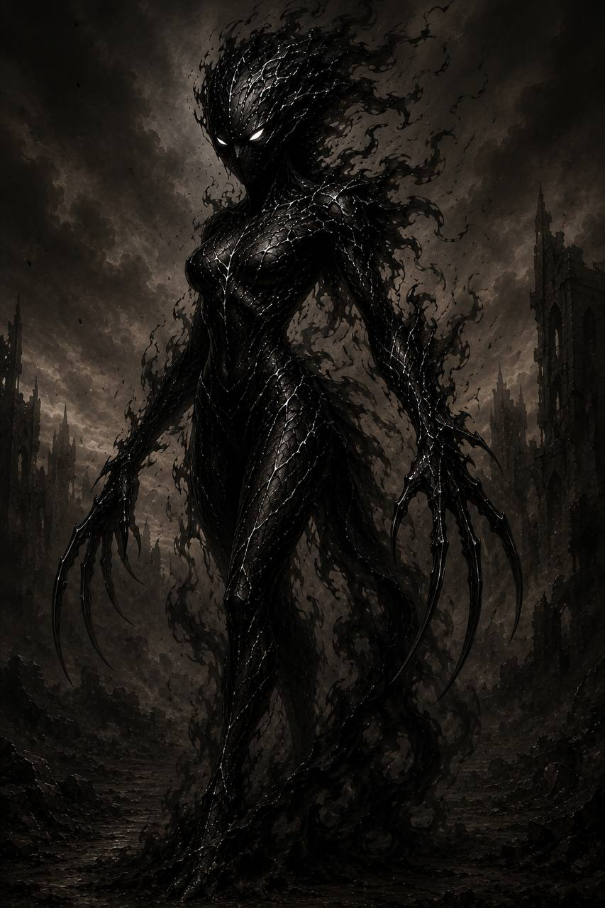
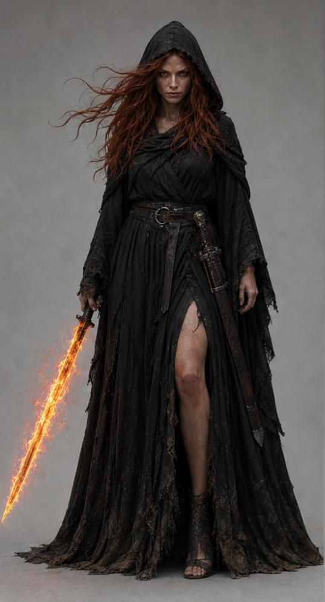

Лиенна

1 фаза

2 фаза
АРХИВНОЕ ДОСЬЕ № 02-D
Допуск: высший
[КОД: АЛЫЙ]
Дайн
Объект: Лиенна
Классификация: хранитель пламени
Степень наблюдения: постоянная
Расширенная оценка:
Лиенна является одной из первых дайнов, сумевших полностью изменить собственную природу. После событий в Храме Драконов объект обрёл человеческий облик и получил силу, ранее недоступную представителям своего народа.
В отличие от большинства докаинов, Лиенна проявляет высокий уровень эмпатии и способна принимать решения, руководствуясь не только приказами, но и собственными убеждениями.
На протяжении всей войны объект оставался одним из самых преданных соратников Дариуса и неоднократно принимал участие в ключевых сражениях.
Угроза:
Наибольшую опасность представляет сочетание высокой боевой эффективности и абсолютной преданности выбранной цели.
Получив силу Хранителей Пламени, объект стал значительно опаснее большинства представителей своего вида.
Особенности:
- Одна из первых дайнов.
- Первая известная представительница своего народа, полностью принявшая человеческий облик.
- Получила силу Хранителей Пламени.
- Является одним из сильнейших воинов армии Дариуса.
- На протяжении многих лет оставалась рядом с Дариусом, несмотря на невозможность их союза.
- Стала одной из немногих, чьи чувства к королю докаинов нашли взаимный отклик.
Примечание наблюдателя:
Когда-то она считала себя чудовищем.
Потом научилась быть человеком.
И, возможно, именно поэтому оказалась человечнее многих людей.
Зафиксированные способности:
Первая фаза
- Полёт.
- Облачная форма.
- Повышенная физическая сила.
- Высокая скорость.
- Ускоренная регенерация.
- Статус дайна.
Вторая фаза
- Превращение в человека.
- Управление пламенем.
- Огненный меч.
- Огненное кольцо.
- Огненная сфера.
- Огненный взрыв.
- Сила Хранителей Пламени.
Последняя запись:
Если ты дочитал это досье до конца, значит хотел узнать, кем был этот докаин.
Но архивы умеют хранить лишь факты.
Остальное тебе придётся искать между строк.